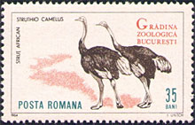
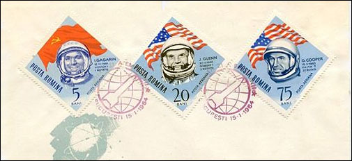
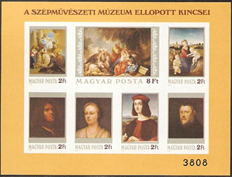
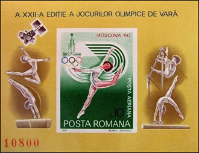
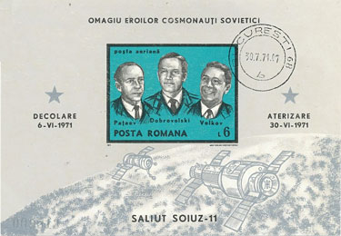
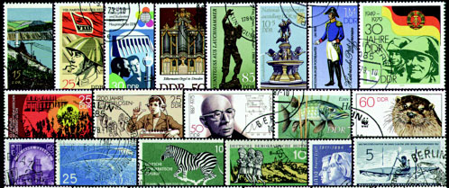

THE BIG PHILATELIC RIP OFF
I was a young stamp collector, who lived in Bucharest, the capital of the then communist Romania. One day I found, through a trade club, a stamp collector from France who was interested in the new stamp issues of Romania. I contacted him, and later I sent him by post, during several years, every new Romanian stamp. I received in return beautiful France and TOM stamps that interested me for my own collection. We used as reference the French Yvert catalogue and its supplements. I can remember that once he told me that it was more affordable for him to trade stamps with me, despite the additional work and costs, instead of buying them in France from dealers, and that anyway he preferred being in contact with a collector like himself than with certain dealers.
So far so good, just that after about five years of successful trade I haven't suddenly got mail from him. I sent him then several letters and finally I got a letter from a relative of him, in which she let me known that this collector died and that she tried, unsuccessfully, to sell his collection.
Today, nearly 50 years later, I know more about the whole thing, and I would like to share my experience with those who could be interested in it. To make the long thing short, the whole is related to a generalized rip off of the Western stamp collectors, by selling them some interesting stamps at over inflated prices.
The participants in this global rip off were some powerful Western stamp dealers companies, Western catalogue houses and postal administrations (PA) from different countries worldwide. On this web page I set for myself the goal to speak about how the PA of former communist countries from the Central and Eastern Europe (CET) provided stamp material to this rough trade.
I will start with the example of the Romanian stamp issue 1964, Bucharest Zoo, a set of nice 8 stamps, print run 500,000 sets, Mi. 2330 - 2337. Their face value was 6 lei, and their official price in Romanian philatelic shops stayed at face during at least 5 years. Those 6 lei represented officially either 1 US$ or 0.38 US$, depending on the will of the Romanian government. On the black market 1 US$ was actually valued then between 60 – 80 lei.

In the reputed Swiss Zumstein “Europe East” catalogue the set was valued at CHF 15.00 which represented then about 7 US$. Even if we know that the catalogue prices are considerable higher then the face values of stamps, you can imagine which margins gave the catalogue value of this set to the dealers who sold them to the inexperienced stamp collectors! Zumstein is taken here just as an example, because the prices in other catalogues, like Michel or Yvert, were similar…
This difference in prices was, of course, observed by the stamp collectors from the East , and many of them tried to find trading partners in Western countries. Because the philatelic market was distorted, the trading activities of local stamps collectors have become the main competitors on the abroad markets for their own PA. Due to the coercive nature of the communist regimes, they implemented some quite effective means to fight their own, local clients, means that we describe and exemplify in what follows.

On the above image we show some values from the infamous Romanian issue 1964 Space conquest (a very popular topics then), with no less then 8 perforated, 8 imperforated stamps and 1 sheet. The set was sold at face value only to subscribers, the maximum delivered quantity being of two complete sets. In the state owned philatelic shops (the only ones that existed) the set was sold at a roughly 10 times its face value. A price of 120 lei was very high and for this reasons nobody was able to trade a set bought at this price with abroad collectors. By the way, all stamp exchanges could be done then only through the official philatelic organization, and they were limited at 100 lei in three months. This made the sending of this set practically impossible.
A similar approach was used during that oppressive epoch by the Hungarian PA, that issued for practically all perforate stamps and sheets also their imperforate counterparts, in very limited quantities, sold in Hungary at 5 times their face value. We show below as an example the 1984 Paintings MS, Block Mi. 170 B; a total of 7800 numbered MS were printed, compared to 265,310 perforated pieces.


Because some stamp collectors have probably circumvented somehow even such drastic limitations, the Romanian PA did a further limiting step by issuing many imperforate souvenir sheets that were sold abroad only. One example is the above 1980 Olympic Games sheet, Michel Block #177; print run of 29,500 numbered MS (for 150,000 perforated ones). Do you know another European country in which its stamp collectors could not buy legally all the stamps that were issued by the PA of that country?

The above imperforated Romanian souvenir sheet was issued on July 26, 1971, Michel Block #86. The print run was of only 12,500 MS, as opposed to the perforated version, Michel Block 85, with a print run of 100,000 pieces. A Romanian stamp collector managed to get somehow the MS and to let cancel it (allegedly) 4 days after the issuing date or a months after the tragic death of the cosmonauts.
Due to the high demand for them in Romania, such issues were sometimes stolen directly from the printing office (Fabrica de timbre) and were then sold at very high prices on the black market. Some of the culprits were caught and convicted. Being easy to manipulate, they became agents of the Securitate (secret police) and had the task to spy on stamp collectors. For a particular result of their work see my page related to "my personal" Informant, what I learned many yars later.
Another kind of rip off approach was that of the East Germany (DDR) postal administration. Because especially the collectors from the West Germany were interested in DDR stamps, for each issued set the DDR the PA selected, arbitrarily, one value that had then a limited print run and that was sold on the internal marked in very limited quantities, this only to paying subscribers. These stamps were officially called Sperrwerte, or Locking Values in English. Thus not only the DDR citizens but also their stamps were (b)locked inside of country's borders. Please see below a selection of them.

By the creation of a monopolized market abroad, followed by limitations imposed to the local stamp collectors, the final goal of all these actions was the rip off of Western stamp collectors in favor of dealers and of the participating PAs. Fortunately, most of Western collectors could understand what was it all about and avoided all together such kind of stamps. This can be the explanation why the heiress of the defunct French stamp collector, whom I mentioned in the beginning of this article, couldn't find a buyer for the stamps that she inherited.
UPDATE 2016
This is an e-mail that I sent the 9th of January 2016 to the Linn's editors, commenting on an article written by Ken Lawrence, in which he tells us what he learned 30 years ago from Peter Fischer, a known German philatelic editor he met in East Berlin.
The article “East Germany's ‘blocked values' and the APS ‘Black Blot' program”, Linn's Stamp News Jan. 25,2016, p. 26 – 28 contains, unfortunately, some flagrant inaccuracies.
The stamp issues of West Germany and West Berlin were interesting for the East German collectors because their face value was expressed in a free convertible currency. It was a much more valuable one than that used in DDR, for example for future stamp trades with Western partners.
The goal of East German (DDR) postal authorities in issuing stamps of limited availability was to avoid the competition from the East-German stamp collectors, thus cornering the market for their own issues. This was the real reason why the East-German stamp collectors could acquire only two full sets of each issue.
The assertion that “… the Sperrwert idea originated among East German stamp clubs” is a usual propaganda trick that attributes the unpopular ideas to unnamed masses.
The assertion about the stamp dealers who were allegedly “qualified for larger quotas” is ridiculous for those who lived those times behind the Iron Curtain and who won't forget that the philatelic trade was nationalized.
In conclusion the APS and many international catalogs had very good reasons to emphasize the harmful origin of these stamps.
Comment on the newsgroup news:rec.collecting.stamps.discuss (excerpt): Perhaps 30 years ago I got, as part of a box lot, about a decade's worth of CTO DDR sets -- all missing one value. So I figured they were a double ripoff -- CTO artificially limited. I had no idea how bad it was in Romania. T.R.
Just to finally mention that the Romanian PA has printed other rip off stamps, in the name of so-called Dunes and some African countries (like Chad). They have been ordered by the same clients and they have been sold through the same dirty channels to Western collectors. You can learn more about those stamps from the page "Stamp Issuing and Printing in Romania", that I published in 2009 on my site "Romania Seen Through its Postal Stamps."
Created: 11/09/2011. Revised: 1/11/2024
Copyright © 2011 - 2024 by Victor Manta, Switzerland/USA.
All rights reserved worldwide.